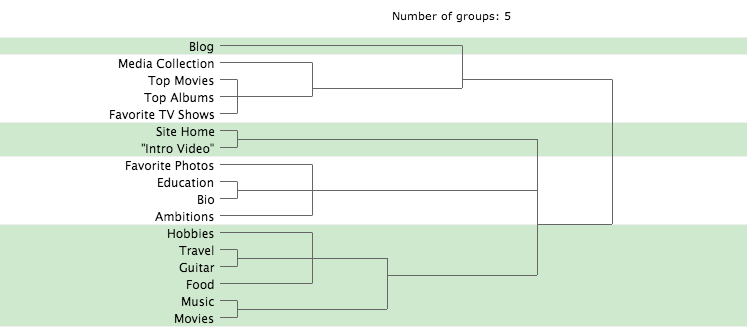
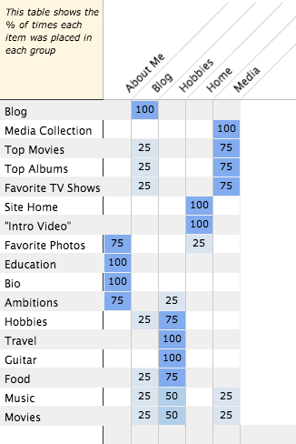

For this project, I'm going to make a much more expanded personal site, which will include a more in-depth look at my favorite movies and music. It will be a personal site for me as a music and movie review blogger. I hope to have it contain my blog, list of favorite movies and albums, and reviews in addition the about me/hobbies that I had included in the original personal site project. I hope to make it ideal so someone interested in my blogs and reviews to learn more about me and to find specific posts.
The data I compiled can be best displayed in the following two charts...
This tree graph showing how they should be grouped into five different categories (the number of categories I provided)

And this chart that showed the frequency of each content snippet's matching with each of the five website categories I had provided

There were 17 general content snippets that I had come up with for the project, and they would be sorted into the categories that I had provided: "Home Page", "Blog", "About Me", "Media", and "Hobbies". I told the three friends that I had sent the organizer link to about my site and the categories and left it up to them to choose where to put the different content snippets. The results for this had a bit more variation than the sorting section I had done for part 1 of this assignment.
Based on the results of organization from me and the three participants, I know for a fact that my "About Me" section should include my Favorite Photos, Education description, my Bio, and a list of my ambitions, as it was agreed upon with at least 75% or more success that these should be included in that section. The only thing for the "blog" section that had a strong inclusion success was the Life Blog for general life thoughts and topics. I can probably include overlap from other sections in the blog. My "Home" section will include the site introduction and the intro video. My "Hobbies" section will discuss my various Hobbies including Travel, Guitar, Food, Music and Movies. Finally, my "Media" section will include a comprehensive list of my own collection of BluRays/DVDs and Music albums, as well as my favorite movies, albums, and TV shows.